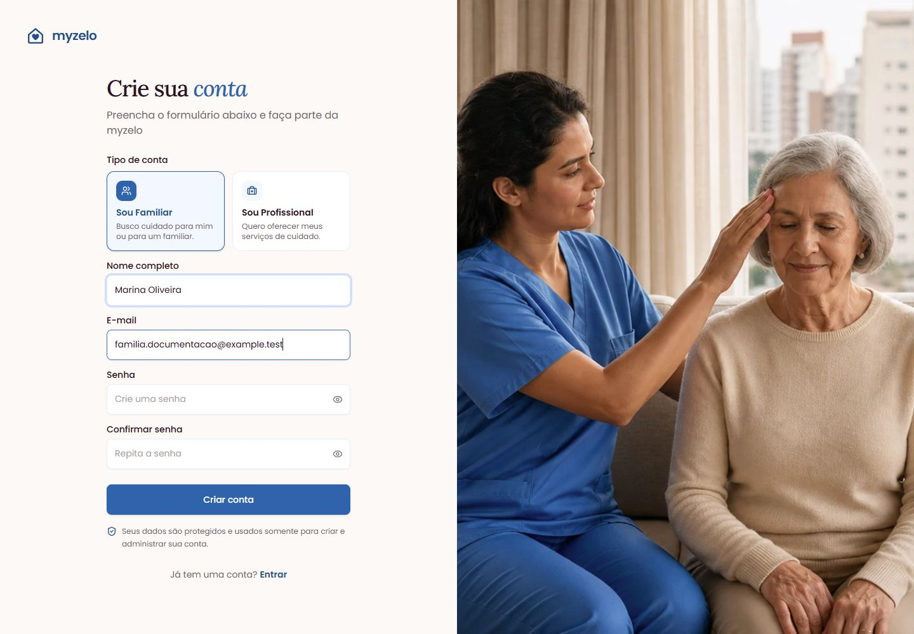

Começando
Criar uma conta familiar
Cadastre o contato responsável por pedir e acompanhar os cuidados.
Preencher o cadastro
- Na página inicial, escolha Solicitar cuidado. Na tela de entrada, essa opção aparece com o complemento “Para mim ou minha família”.
- Confirme o tipo Sou Familiar. Essa escolha leva à jornada de quem procura cuidado.
- Preencha Nome completo com o nome do responsável pela conta e E-mail com um endereço que você consiga acessar.
- Crie sua Senha e repita o mesmo conteúdo em Confirmar senha. Guarde a senha em local seguro.
- Clique em Criar conta. Se algum campo for recusado, corrija o campo indicado e envie novamente.


Quando você recebeu um convite da equipe
- Saia de outra conta, se estiver conectada. Abra o convite mais recente na caixa do e-mail que você informou à equipe.
- Confira a validade no e-mail: ela mostra a data e a hora, por exemplo, 25/10/2026 13:10. Use o convite dentro do prazo informado.
- Clique em Concluir meu cadastro no e-mail. Na tela aberta, confira o nome e o e-mail exibidos, preencha a senha e a confirmação e clique em Concluir cadastro.
- Complete o primeiro acesso com nome e WhatsApp, se solicitado.
- O endereço do convite já fica confirmado ao concluir: não é necessário outro e-mail de verificação para esse mesmo endereço. As demais etapas da solicitação de cuidado continuam necessárias.
Se a equipe reenviar o convite, o anterior deixa de funcionar. Depois de usado ou vencido, ele também fica indisponível. Para uma conta já criada, use Entrar ou Recuperar acesso; não tente criar outra com o mesmo endereço.
Depois do cadastro comum
No cadastro feito por Criar conta, a aplicação abre Vamos configurar sua conta, a etapa de primeiro acesso, e envia a mensagem de confirmação ao seu e-mail. Esse caminho continua exigindo verificação. Siga Confirmar e-mail e primeiro acesso para completar a preparação.
Resultado esperado
Sua conta familiar é criada e você chega à configuração inicial.
Regras que você precisa conhecer
- O e-mail precisa ter formato válido e não pode já estar em uso por outra conta.
- Senha e confirmação devem ser iguais; siga a validação apresentada pelo sistema.
- A opção Continuar com Google está marcada como “Em breve” na tela de entrada. Use e-mail e senha.